1. Introduction
To monitor the effectiveness of antimalarial drugs, the World Health Organization (WHO) recommends the use of Therapeutic Efficacy Studies (TES). TES are observational studies in which patients with uncomplicated malaria are treated and followed for several weeks to check if the infection clears and remains suppressed. Because patients can become re-infected during this follow-up period, distinguishing whether a recurrence is due to recrudescence (the reappearance of parasites from the original infection after partial clearance) or a reinfection (a new infection from a separate mosquito bite) is essential. This process, known as molecular correction, relies on comparing parasite genotypes from the initial infection and any subsequent recurrence.
MalReBay is an R package that implements a
Bayesian framework for molecular correction in malaria
therapeutic efficacy studies. Instead of making a direct deterministic
call, it uses genotyping data from a patient’s initial infection (day 0)
and their recurrent infection to estimate the probability that a
recurrence is due to recrudescence
versus reinfection. Unlike rule-based methods, it
explicitly incorporates genotyping uncertainty, within-host diversity,
and local allele frequency information, providing a principled and
robust classification.
This tutorial provides a step-by-step guide to the main analysis workflow, from loading your data to interpreting the final results. We will first review the conceptual framework of the package and then walk through a practical example, from loading data to interpreting the final results.
2. Bayesian framework for molecular correction
MalReBay applies a Bayesian model to classify each
malaria recurrence as a recrudescence or a
reinfection. For each patient
,
a binary variable
indicates the recurrence cause:
for recrudescence and
for reinfection.
Bayesian inference updates prior beliefs about using the observed genotyping data , producing the posterior probability .
The figure below illustrates this process, in which prior probabilities and data likelihoods are combined through Bayes’ rule to obtain the posterior probabilities that drive recurrence classification.

Prior is the baseline belief about recrudescence before seeing the data.
Likelihood is the probability of the observed allele patterns given each hypothesis, accounting for allele frequencies, within-host diversity, and genotyping errors.
Posterior is the updated probability that a recurrence is a recrudescence after combining priors and data.
Recurrences events are classified as recrudescence when exceeds a threshold (e.g., 0.5).
In practice, these probabilities cannot be solved analytically because the posterior distribution has no closed form; therefore, MalReBay uses Markov chain Monte Carlo (MCMC) sampling to approximate them.
3. The MalReBay workflow
The workflow begins with paired genotyping data from
day 0 and day of recurrence infections. These
data are combined with model parameters (e.g., genotyping error rates,
within-host diversity, allele frequencies) and analyzed using a Markov
chain Monte Carlo (MCMC) algorithm. The output is the
posterior probability of recrudescence for each recurrence, which can
then be summarized at both the patient and study level.
The main classify_infections() function automates this
process—from loading the genotyping data and parameter settings to
generating posterior estimates and final recurrence classifications. The
following sections describe each input type and how to prepare your data
for analysis.
4. Input Data
MalReBay can analyze two main types of genotyping
data:
Length-polymorphic markers (e.g., microsatellites, MSP, GLURP).
Amplicon sequencing data (haplotype).
The primary input is an Excel file containing genotyping data from a TES.
The input format differs slightly depending on which data type you are working with. Below we describe each format and provide examples.
4.1 Length-polymorphic markers
For length-polymorphic markers, the input Excel file should have the
following structure: + A Sample.ID column that uniquely
identifies each sample and includes “Day 0” or “Day of recurrence”.
The day of sampling (0 for baseline, X for recurrence). Note sometimes this is included in the Sample.ID column (e.g.,
BD21-002D0andBD21-002D42).A
Sitecolumn indicating the geographical origin of the sample.Marker columns named like
LocusName_AlleleNumber(e.g.,313_1,313_2,313_3, etc.), where each cell represents the parasite clones fragment length observed in base pairs.
Here is an example of the expected input format for
length-polymorphic data: 
5. Descritptive analysis
Before running the main classification analysis, it is often helpful
to explore your genotyping data. MalReBay provides
specialized functions to visualize allele and haplotype
diversity, tailored to the type of data you are analyzing.
These exploratory analyses can reveal which markers are most
informative or frequent in the population, assess the
quality and completeness of the genotyping data, and
evaluate the overall polymorphism and richness of the
markers, all of which are important for robust downstream
analyses.
5.1 Length-polymorphic markers
For datasets with length-polymorphic markers, we now focus on MOI (Multiplicity of Infection) and allele diversity visualizations:
MOI Violin Plots: Show the distribution of the number of distinct parasite clones per infection, providing insight into infection complexity across samples.
Allele Diversity Pie Charts: Display the relative frequencies of different alleles within each marker, highlighting dominant alleles and overall marker polymorphism.
These plots facilitate comparison of parasite population structure between baseline and recurrence samples.
5.2 Amplicon sequencing data
For amplicon sequencing datasets, we present similar visualizations:
MOI Violin Plots: Illustrate the number of distinct haplotypes per infection.
Haplotype Diversity Pie Charts: Summarize the relative abundance of haplotypes for each marker.
These plots help identify dominant haplotypes, assess genetic diversity, and detect shifts in the parasite population over time.
6. Example of classification: length-polymorphic markers
In this section, we provide a step-by-step example of using the
MalReBay package to classify recurrent malaria infections
with length-polymorphic genotyping data.
We will use an example dataset included with the package, containing
data from a Therapeutic Efficacy Study (TES) conducted in Angola in
2021. The dataset includes 7 microsatellite markers; 313,
383, TA1, POLYA,
PFPK2, 2490, TA109, genotyped
from 70 patients from three study sites: Benguela, Lunda Sul and
Zaire.
First, we need to load the MalReBay package, along with
a couple of other useful packages for data handling and plotting.
library(MalReBay)
library(future)
library(dplyr)
library(ggplot2)
library(PfRecur)
library(purrr)
library(tidyr)
library(here)
library(kableExtra)Step 1: Load data
We import the example dataset using
MalReBay:::import_data(). The dataset includes both late
failure samples and any additional samples. We then process the sample
IDs to extract the patient identifier and day of sampling (baseline or
day of recurrence).
input_file <- system.file("extdata", "Angola_2021_TES_7NMS.xlsx", package = "MalReBay")
imported_data <- MalReBay:::import_data(filepath = input_file, verbose = FALSE)Step 2: Define an Output Folder
An output folder is defined to store results generated by the analysis. If the folder does not already exist, it will be created automatically.
output_dir_lp <- here::here("vignettes", "malrebay_vignette_outputs", "length_polymorphic_results")
if (!dir.exists(output_dir_lp)) { dir.create(output_dir_lp, recursive = TRUE)}Step 3: Descriptive statistics
In this step, we generate summary statistics to explore the genetic characteristics of the data before running the Bayesian model. Two key measures are considered:
Multiplicity of Infection (MOI): estimates the number of distinct parasite clones per marker in each sample, providing insight into within-host diversity.
Marker diversity: visualizes the distribution of allele sizes for each marker, helping to assess the level of genetic variability in the study population.
These descriptive outputs give context for interpreting molecular correction results and can highlight potential sources of genotyping uncertainty.
Multiplicity of Infection (MOI)
genotypedata_lp <- dplyr::bind_rows(imported_data$late_failures, imported_data$additional)
if (nrow(genotypedata_lp) > 0) {
moi_per_marker_data <- MalReBay::calculate_marker_moi(
genotypedata = genotypedata_lp
)
if (!is.null(moi_per_marker_data) && nrow(moi_per_marker_data) > 0) {
MalReBay::generate_marker_moi_plot(
moi_data = moi_per_marker_data,
output_folder = output_dir_lp
)
} else {
message("Skipping MOI plot: MOI data could not be calculated.")
}
} else {
message("Skipping MOI analysis: No genotype data available.")
}
Marker diversity
if (imported_data$data_type == "length_polymorphic" && nrow(genotypedata_lp) > 0) {
diversity_plot <- MalReBay:::generate_diversity_plots(
genotypedata = genotypedata_lp,
data_type = "length_polymorphic",
marker_info = imported_data$marker_info,
output_folder = output_dir_lp,
filename_prefix = "length_polymorphic_diversity"
)
if (!is.null(diversity_plot)) print(diversity_plot)
} else {
message("Skipping Length Polymorphic diversity plots: No data found.")
}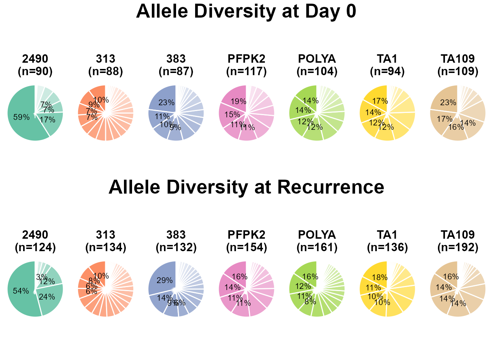
Step 4: MCMC Configuration
The MCMC sampler has several parameters that control its runtime and
convergence criteria. For this quick tutorial, we will use a relaxed
configuration. For a real analysis, you should use more iterations
(e.g., max_iterations should be 10000 or more) and stricter
thresholds to ensure robust convergence.
Parameter Definitions
max_iterations is the maximum total number of MCMC iterations and serves as an upper limit to ensure the model stops even if convergence hasn’t been reached earlier. The appropriate number of iterations varies with data quality and marker type. In this example we are using the Microsatellite markers and for the dataset we will use 20,000 runs.
ess_threshold is the Effective Sample Size (ESS), a standard MCMC diagnostic that measures how many independent samples the chain effectively represents after accounting for autocorrelation. A higher ESS indicates better mixing and more reliable estimates. Common thresholds range from 200 to 1,000+, depending on precision needs. In our setup, 400 provides a balance between computational cost and reliability.
rhat_threshold is the Gelman–Rubin statistic, corresponding to the potential scale reduction factor (R̂ or R-hat). It compares within- and between-chain variance, with values close to 1.0 indicating convergence (typically acceptable if R̂ < 1.1).
chunk_size – The number of iterations run before intermediate convergence checks are performed. This parameter controls the automatic stopping mechanism by dividing the total iterations into smaller chunks (e.g., four). Smaller chunk_size values allow for more frequent convergence checks but increase computational time.
quick_mcmc_config <- list(
n_chains = 4,
chunk_size = 1000,
max_iterations = 1000,
rhat_threshold = 1.1,
ess_threshold = 400
)Step 5: Execute the Main Function
Now we can run the analysis. classify_infections() will
print progress messages to the console, informing you about the data
type it detected, the sites it is analyzing, and the status of the MCMC
convergence. The ‘future’ package is used in the background for parallel
processing, so you can expect the analysis to run faster on multi-core
machines.
classification_summary <- classify_infections(
imported_data = imported_data,
mcmc_config = quick_mcmc_config,
output_folder = output_dir_lp,
n_workers = 2,
verbose = FALSE
)The classify_infections() function returns a list
containing two key data frames:
summary: Main results for each patient, including the posterior probability of recrudescence and the number of comparable loci.marker_details: Detailed information on each marker for each patient.
summary_df <- classification_summary$summary
knitr::kable(head(summary_df), caption = "Classification summary.")| Site | Sample.ID | Probability | N_Available_D0 | N_Available_DF | N_Comparable_Loci |
|---|---|---|---|---|---|
| Benguela | BD21-002 | 0.0000000 | 7 | 7 | 7 |
| Benguela | BD21-040 | 0.0000000 | 7 | 7 | 7 |
| Benguela | BD21-041 | 0.9933333 | 7 | 7 | 7 |
| Benguela | BD21-053 | 0.6266667 | 7 | 5 | 5 |
| Benguela | BD21-075 | 0.0000000 | 7 | 7 | 7 |
| Benguela | BD21-099 | 0.0000000 | 7 | 7 | 7 |
Key columns in the summary include:
Site: The geographical site of the sample.
Sample.ID: The unique patient identifier.
Probability: The posterior probability that the infection is a recrudescence. A value near 1.0 suggests recrudescence, while a value near 0.0 suggests reinfection.
N_Available_D0 / N_Available_DF: The number of loci with genetic data at Day 0 and Day of Failure, respectively.
N_Comparable_Loci: The number of loci with data at both time points, which is the amount of data used for the classification.
Step 6: Visualizing the Results
A histogram of the posterior probabilities provides a clear overview of the classification results. If the histogram shows a clear separation into two groups (one near 0 and one near 1), this indicates high confidence in distinguishing recrudescence from reinfection.
The histogram allows you to visually assess the certainty of the classifications and to identify any ambiguous cases for further investigation.
ggplot(summary_df, aes(x = Probability)) +
geom_histogram(binwidth = 0.05, fill = "steelblue", color = "white", boundary = 0) +
labs(
title = "Distribution of Posterior Probabilities of Recrudescence",
x = "Posterior Probability",
y = "Number of Patients"
) +
theme_bw()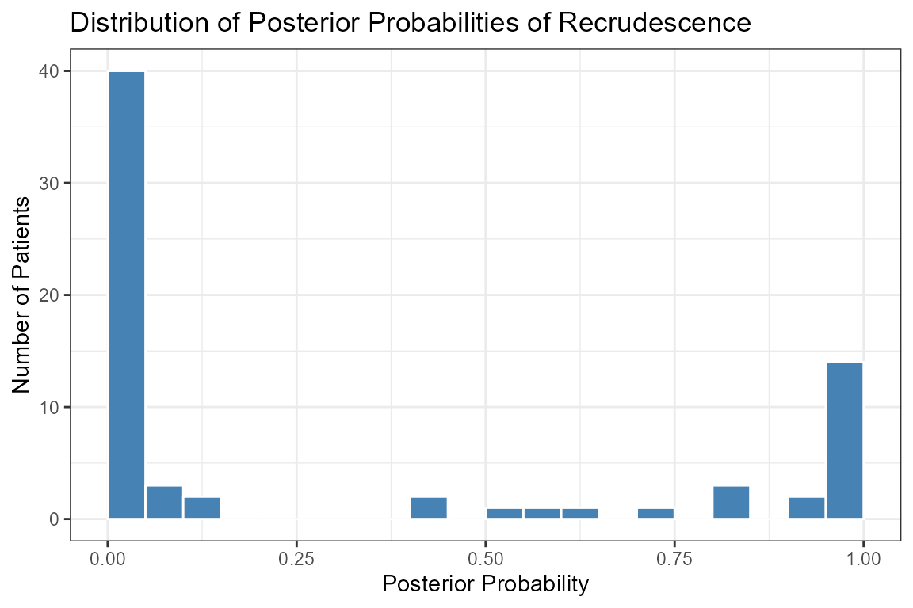
In this example run, we see a clear group of patients with low probability (likely reinfections) and another group with high probability (likely recrudescences).
Step 7: Convergence diagnosis
Convergence is monitored automatically during sampling using both the log-likelihood and standard diagnostics. By default, the algorithm will stop once the following criteria are met:
R-hat (Gelman–Rubin diagnostic): All monitored parameters must have and the Gelman–Rubin plot should stabilize near 1.0 and remain below the 1.1 threshold.
Effective Sample Size (ESS): The number of effectively independent samples must exceed the user-defined threshold (the value defined in parameter
ess_threshold)Maximum iterations: If convergence has not been reached, sampling stops once the iteration cap (the value defined in parameter
max_iterations).
How to Generate Plots Interactively
The classify_infections function saves the MCMC
log-likelihood data for each site within its results object. You can use
the exported generate_likelihood_diagnostics function to
view the plots for any site interactively in your R session.
The key plots for diagnostics are:
Trace plot: Chains should look like “fuzzy caterpillars” with no trends.
Gelman-Rubin plot: The shrink factor should approach 1.
Histogram: Shows the posterior distribution of the log-likelihood.
Autocorrelation (ACF) plot: Correlation should drop to zero quickly.
Example: Diagnostics for a Single Site
Below is an example using the site Benguela,
demonstrating how to generate and visualize the convergence
diagnostics:
site_name <- "Benguela"
LP_loglik_data <- classification_summary$mcmc_loglikelihoods[[site_name]]
if (!is.null(LP_loglik_data)) {
generate_likelihood_diagnostics(
all_chains_loglikelihood = LP_loglik_data,
site_name = site_name,
save_plot = FALSE,
output_folder = NULL,
verbose = FALSE
)
} else {
cat("Log-likelihood data for site '", site_name, "' not available.\n")
}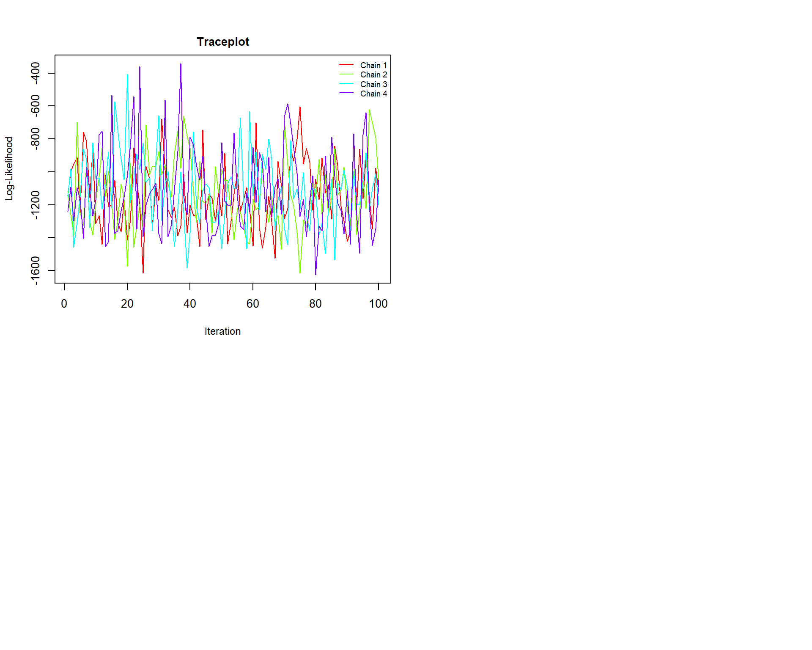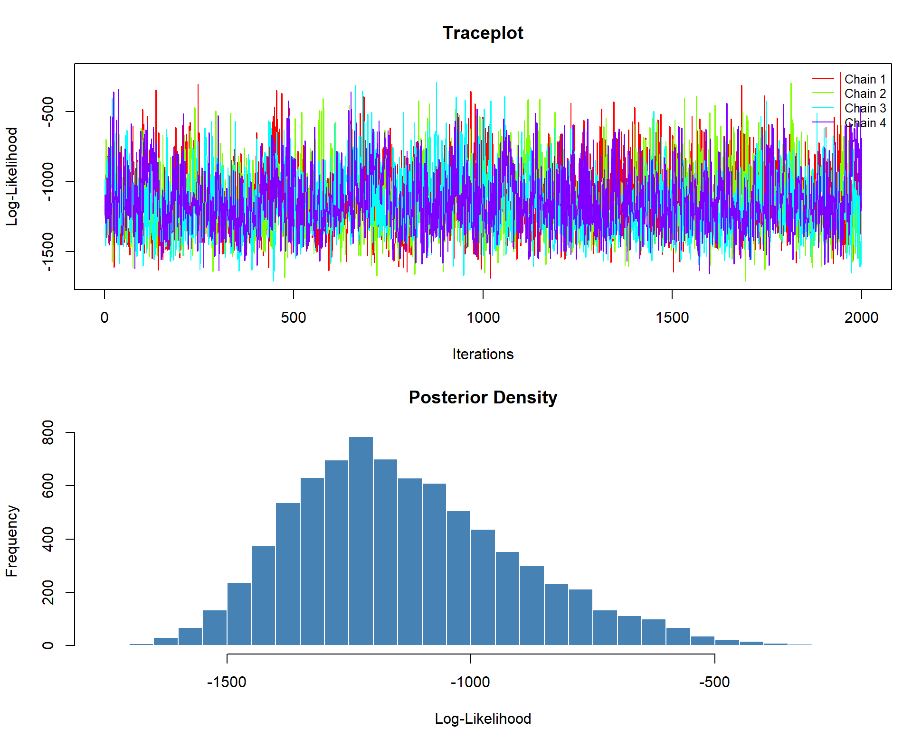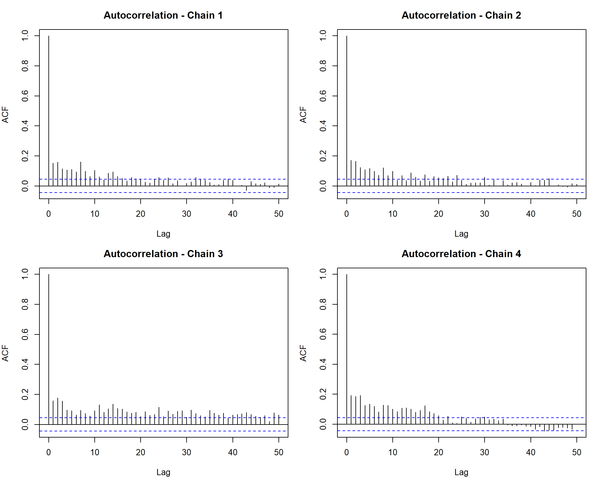
These trace, Gelman–Rubin, histogram, and ACF plots collectively provide visual assurance that the MCMC chains have mixed well and stabilized.
Step 8: Comparison with other methods
To evaluate the performance of the Bayesian classification in MalReBay, we compare its results against two alternative approaches:
PfRecur: A previously published algorithm for classifying recurrent malaria infections.
Match-counting algorithm: A simpler approach that counts allele matches between Day 0 and recurrence samples.
For length-polymorphic markers, we combine the outputs of
MalReBay, PfRecur, and the
match-counting algorithm into a single table. This allows
us to examine, for each patient:
The number of loci compared and the number of matches between samples.
The per-locus results from match-counting (
Rfor match,NIfor non-match,INDfor indeterminate).The posterior probability of recrudescence from
MalReBay(MalReBay_Probability).The
PfRecurprobability for the same samples (PfRecur_Probability).
pfrecur_raw_data <- readxl::read_excel(input_file)
pfrecur_results <- MalReBay:::run_pfrecur_analysis_original_prep(
raw_data_df = pfrecur_raw_data,
output_csv_path = tempfile(fileext = ".csv")
)
pfrecur_clean <- pfrecur_results %>%
mutate(Sample.ID = as.character(sub("^(.*)D[0-9]+$", "\\1", recurrence))) %>%
rename(PfRecur_Probability = M1) %>%
select(Sample.ID, PfRecur_Probability)
match_results_lp <- MalReBay:::perform_match_counting(
genotypedata_latefailures = imported_data$late_failures,
marker_info = imported_data$marker_info
)
match_summary_clean <- match_results_lp %>%
rename(Patient.ID = Sample.ID)
malrebay_clean <- summary_df %>%
select(Site, Sample.ID, MalReBay_Probability = Probability) %>%
mutate(Sample.ID = as.character(Sample.ID))
combined_comparison <- malrebay_clean %>%
left_join(pfrecur_clean, by = "Sample.ID") %>%
left_join(match_summary_clean, by = c("Sample.ID" = "Patient.ID"))
marker_column_names <- setdiff(colnames(match_summary_clean), c("Patient.ID", "Number_Matches", "Number_Loci_Compared"))
final_table <- combined_comparison %>%
select(
Sample.ID,
Site,
Number_Matches,
Loci_Compared = Number_Loci_Compared,
all_of(marker_column_names),
MalReBay = MalReBay_Probability,
PfRecur = PfRecur_Probability
)
knitr::kable(
head(final_table),
caption = "Comparison of MalReBay, PfRecur, and match-counting results for length-polymorphic data.",
digits = 3
) %>%
scroll_box(width = "100%") | Sample.ID | Site | Number_Matches | Loci_Compared | 313 | 383 | TA1 | POLYA | PFPK2 | 2490 | TA109 | MalReBay | PfRecur |
|---|---|---|---|---|---|---|---|---|---|---|---|---|
| BD21-002 | Benguela | 0 | 7 | NI | NI | NI | NI | NI | NI | NI | 0.000 | 0.000 |
| BD21-040 | Benguela | 1 | 7 | NI | NI | NI | R | NI | NI | NI | 0.000 | 0.000 |
| BD21-041 | Benguela | 6 | 7 | R | NI | R | R | R | R | R | 0.993 | 1.000 |
| BD21-053 | Benguela | 2 | 5 | NI | R | IND | NI | R | IND | NI | 0.627 | 0.312 |
| BD21-075 | Benguela | 1 | 7 | NI | NI | NI | NI | NI | R | NI | 0.000 | 0.000 |
| BD21-099 | Benguela | 2 | 7 | NI | NI | NI | R | NI | R | NI | 0.000 | 0.000 |
7. Example of classification: amplicon sequencing data
We will use an example dataset included with the package, containing
data from a Therapeutic Efficacy Study (TES). The dataset includes 3
sequencing markers; cpmp, cpp,
amaD3, genotyped from 20 patients.
Step 1: Load data
We import the example AmpSeq dataset using
MalReBay:::import_data(). The dataset includes both late
failure and additional samples.
input_file_ampseq <- system.file("extdata", "Amplicon_Sequencing.xlsx",
package = "MalReBay")
imported_data_ampseq <- MalReBay:::import_data(filepath = input_file_ampseq, verbose = FALSE)Step 2: Define an Output Folder
We define an output folder to store the results. If the folder does not exist, it is created automatically.
output_dir_ampseq <- here::here("vignettes", "malrebay_vignette_outputs", "ampseq_results")
if (!dir.exists(output_dir_ampseq)) {
dir.create(output_dir_ampseq, recursive = TRUE)
}Step 3: Descriptive statistics
We explore the genetic characteristics of the data:
Multiplicity of Infection estimates the number of distinct haplotypes per marker in each sample, reflecting within-host diversity.
Haplotype diversity plots summarize the relative frequencies of haplotypes for each marker, highlighting dominant haplotypes and overall genetic variability.
Multiplicity of Infection (MOI)
genotypedata_ampseq <- dplyr::bind_rows(imported_data_ampseq$late_failures, imported_data_ampseq$additional)
if (nrow(genotypedata_ampseq) > 0) {
moi_per_marker_data <- MalReBay:::calculate_marker_moi(
genotypedata = genotypedata_ampseq
)
if (!is.null(moi_per_marker_data) && nrow(moi_per_marker_data) > 0) {
MalReBay::generate_marker_moi_plot(
moi_data = moi_per_marker_data,
output_folder = output_dir_ampseq
)
} else {
message("Skipping MOI plot: MOI data could not be calculated.")
}
} else {
message("Skipping MOI analysis: No genotype data available.")
}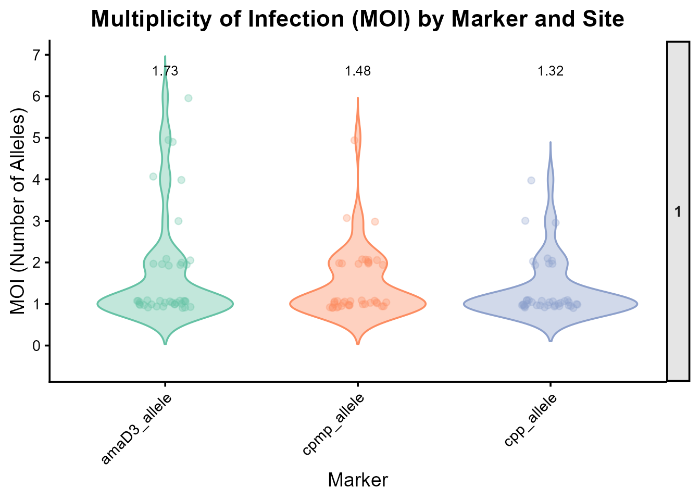
Marker diversity
if (imported_data_ampseq$data_type == "ampseq" && nrow(genotypedata_ampseq) > 0) {
diversity_plot_ampseq <- MalReBay:::generate_diversity_plots(
genotypedata = genotypedata_ampseq,
data_type = "ampseq",
output_folder = output_dir_ampseq,
filename_prefix = "haplotype_diversity"
)
if (!is.null(diversity_plot_ampseq)) print(diversity_plot_ampseq)
} else {
message("Skipping AmpSeq diversity plots: No data found.")
}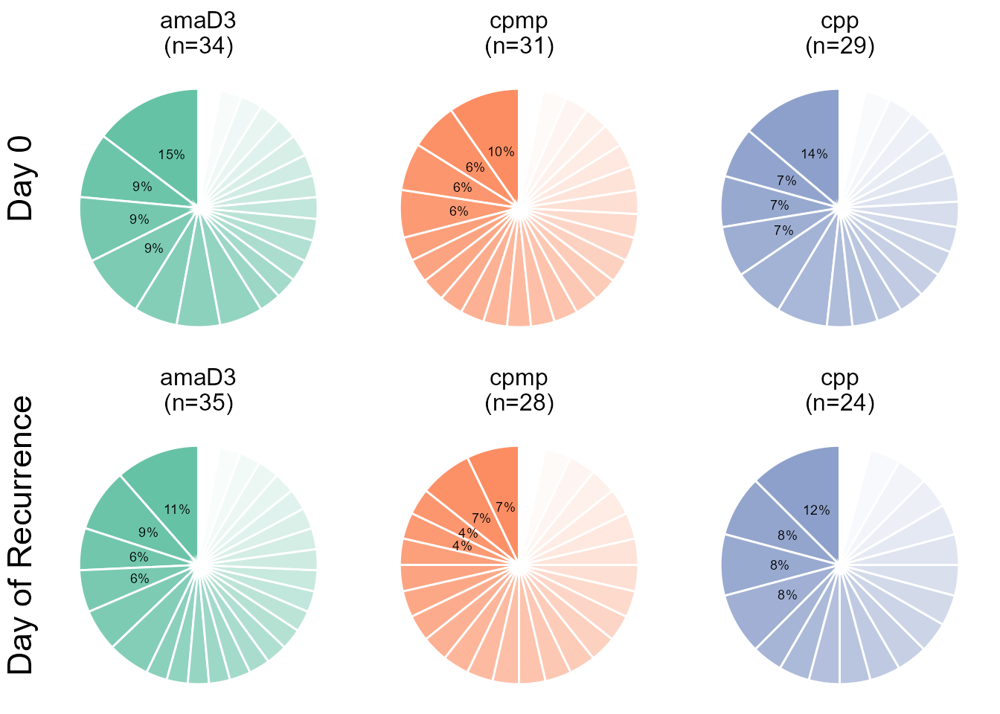
Step 4: MCMC Configuration
We define the MCMC sampler parameters for this tutorial run:
n_chains Number of parallel chains.
chunk_size Number of iterations between convergence checks.
max_iterations Maximum total iterations.
rhat_threshold Gelman–Rubin statistic threshold for convergence.
ess_threshold Effective Sample Size threshold.
quick_mcmc_config <- list(
n_chains = 4,
chunk_size = 1000,
max_iterations = 1000,
rhat_threshold = 1.1,
ess_threshold = 400
)Step 5: Execute the Main Function
Now we can run the analysis by calling the
classify_infections().
classification_summary_ampseq <- classify_infections(
imported_data = imported_data_ampseq,
mcmc_config = quick_mcmc_config,
output_folder = output_dir_ampseq,
n_workers = 2,
verbose = FALSE
)The classify_infections() function returns a list
containing two key data frames: summary and
marker_details.
The $summary data frame provides the main result for
each patient. Let’s look at the first few rows.
summary_df <- classification_summary_ampseq$summary
knitr::kable(head(summary_df), caption = "Classification summary.")| Site | Sample.ID | Probability | N_Available_D0 | N_Available_DF | N_Comparable_Loci |
|---|---|---|---|---|---|
| 1 | 1 | 1.0000000 | 3 | 3 | 3 |
| 1 | 10 | 1.0000000 | 3 | 3 | 3 |
| 1 | 11 | 1.0000000 | 3 | 3 | 3 |
| 1 | 12 | 1.0000000 | 3 | 3 | 3 |
| 1 | 13 | 1.0000000 | 3 | 3 | 3 |
| 1 | 14 | 0.9933333 | 3 | 3 | 3 |
Key columns in the summary include:
Site: The geographical site of the sample.
Sample.ID: The unique patient identifier.
Probability: The posterior probability that the infection is a recrudescence. A value near 1.0 suggests recrudescence, while a value near 0.0 suggests reinfection.
N_Available_D0 / N_Available_DF: The number of loci with genetic data at Day 0 and Day of recurrence, respectively.
N_Comparable_Loci: The number of loci with data at both time points, which is the amount of data used for the classification.
Step 6: Visualizing the Results
A histogram of the posterior probabilities is an excellent way to visualize the overall results.
ggplot(summary_df, aes(x = Probability)) +
geom_histogram(binwidth = 0.05, fill = "steelblue", color = "white", boundary = 0) +
labs(
title = "Distribution of Posterior Probabilities of Recrudescence",
x = "Posterior Probability",
y = "Number of Patients"
) +
theme_bw()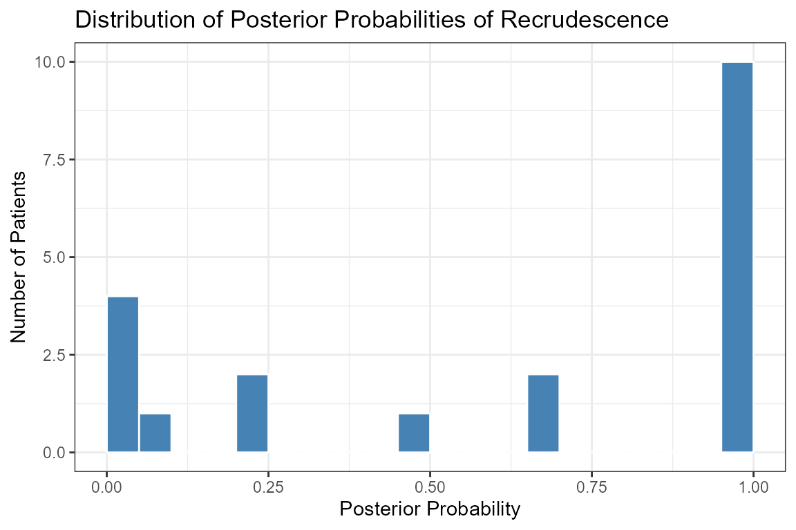
In this example run, we see a clear group of patients with low probability (likely reinfections) and another group with high probability (likely recrudescences).
Step 7: Convergence diagnosis
We can generate convergence diagnostics for the Amplicon Sequencing analysis using the MCMC log-likelihood data. The figure below shows trace, Gelman–Rubin, histogram, and autocorrelation plots for a single site.
site_name <- "1"
ampseq_loglik_data <- classification_summary_ampseq$mcmc_loglikelihoods[[site_name]]
if (!is.null(ampseq_loglik_data)) {
generate_likelihood_diagnostics(
all_chains_loglikelihood = ampseq_loglik_data,
site_name = site_name,
save_plot = FALSE,
output_folder = NULL,
verbose = FALSE
)
} else {
cat("Log-likelihood data for site '", site_name, "' not available.\n")
}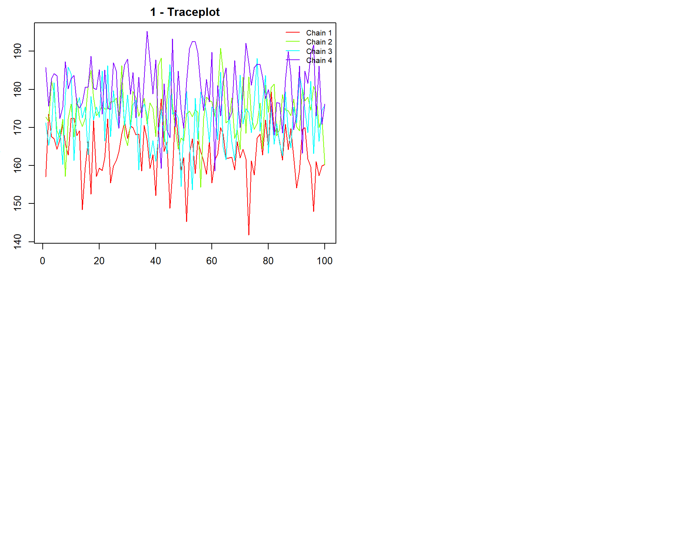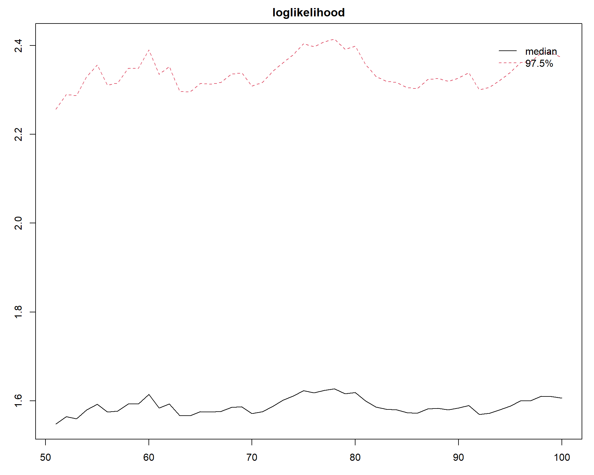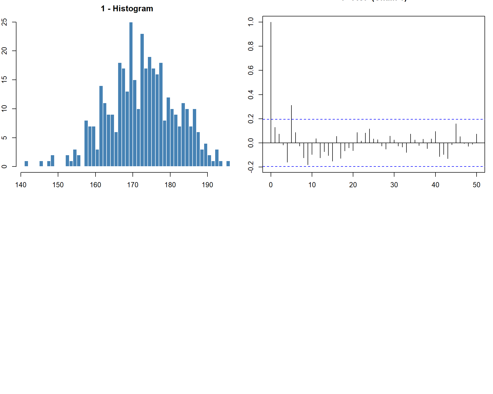
Step 8: Comparison with match-counting algorithm
For amplicon sequencing data, we perform a similar comparison, but
only between MalReBay and the match-counting
algorithm. The resulting table includes:
Raw allele calls for each marker.
Match-counting summaries (
Number_MatchesandNumber_Loci_Compared).Per-locus results (
R,NI,IND).The posterior probability of recrudescence from `MalReBay.
input_file_ampseq <- system.file("extdata", "Amplicon_Sequencing.xlsx",
package = "MalReBay")
imported_data_ampseq <- MalReBay::import_data(filepath = input_file_ampseq, verbose = FALSE)
mcmc_summary_ampseq <- classification_summary_ampseq$summary
match_results_ampseq <- MalReBay:::perform_match_counting(
genotypedata_latefailures = imported_data_ampseq$late_failures,
marker_info = imported_data_ampseq$marker_info)
mcmc_summary_clean <- mcmc_summary_ampseq %>%
dplyr::rename(Patient.ID = Sample.ID) %>%
dplyr::select(Patient.ID, Site, Prob_Recrud_MalReBay = Probability)
match_summary_clean <- match_results_ampseq %>%
dplyr::rename(Patient.ID = Sample.ID)
final_table <- mcmc_summary_clean %>%
dplyr::left_join(match_summary_clean, by = "Patient.ID")
marker_column_names <- setdiff(colnames(match_summary_clean), c("Patient.ID", "Number_Matches", "Number_Loci_Compared"))
final_comparison_table_ampseq <- final_table %>%
dplyr::select(
Sample.ID = Patient.ID,
Site,
Number_Matches,
Number_Loci_Compared,
all_of(marker_column_names),
MalReBay = Prob_Recrud_MalReBay
)
knitr::kable(
head(final_comparison_table_ampseq),
caption = "Comparison of match-counting results and MalReBay probability for amplicon data.",
digits = 3
) %>%
scroll_box(width = "100%")| Sample.ID | Site | Number_Matches | Number_Loci_Compared | cpmp | cpp | amaD3 | MalReBay |
|---|---|---|---|---|---|---|---|
| 1 | 1 | 3 | 3 | R | R | R | 1.000 |
| 10 | 1 | 3 | 3 | R | R | R | 1.000 |
| 11 | 1 | 3 | 3 | R | R | R | 1.000 |
| 12 | 1 | 1 | 3 | NI | R | NI | 1.000 |
| 13 | 1 | 3 | 3 | R | R | R | 1.000 |
| 14 | 1 | 3 | 3 | R | R | R | 0.993 |
The final table contains the following columns:
The raw allele data for each marker.
The summary of the match-counting algorithm (
Number_Matches,Number_Loci_Compared).The detailed per-locus result of the match-counting (
Rfor match,NIfor non-match,INDfor indeterminate).The final posterior probability of recrudescence from the Bayesian MCMC analysis (
Prob_Recrud_MalReBay)
9. Checking non-converged chains and improving convergence
Convergence is a crucial step to ensure that the MCMC results are
reliable. In MalReBay, convergence is monitored
automatically during sampling using both the log-likelihood and standard
diagnostics. If convergence is not achieved, the posterior estimates may
be unreliable, leading to misleading classification of recurrences. For
this reason, this is section is explicit for non-convergence check, so
that users can easily diagnose problematic chains and take corrective
action (e.g., increasing iterations, adjusting priors, or running more
chains).
R-hat (Gelman–Rubin diagnostic): All parameters must satisfy .
Effective Sample Size (ESS): The ESS must exceed the user-defined threshold (
ess_threshold).Maximum iterations: If convergence has not been achieved, sampling stops once the upper limit (
max_iterations) is reached.
output non-convergence
input_file <- system.file("extdata", "Angola_2021_TES_7NMS.xlsx", package = "MalReBay")
imported_data <- MalReBay:::import_data(filepath = input_file, verbose = FALSE)
quick_mcmc_config <- list(
n_chains = 4,
chunk_size = 1000,
max_iterations = 1000,
rhat_threshold = 1.1,
ess_threshold = 100
)
output_dir_nonconverge <- here::here("vignettes", "malrebay_vignette_outputs", "non_convergence_test")
if (!dir.exists(output_dir_nonconverge)) {
dir.create(output_dir_nonconverge, recursive = TRUE)
}
classification_summary_nonconverge <- classify_infections(
imported_data = imported_data,
mcmc_config = quick_mcmc_config,
output_folder = output_dir_nonconverge,
n_workers = 2,
verbose = FALSE
)
site_name <- "Benguela"
loglik_data <- classification_summary_nonconverge$mcmc_loglikelihoods[[site_name]]
if (!is.null(loglik_data)) {
generate_likelihood_diagnostics(
all_chains_loglikelihood = loglik_data,
site_name = site_name,
save_plot = FALSE,
output_folder = NULL,
verbose = FALSE
)
} else {
cat("No log-likelihood data found for site: ", site_name, "\n")
}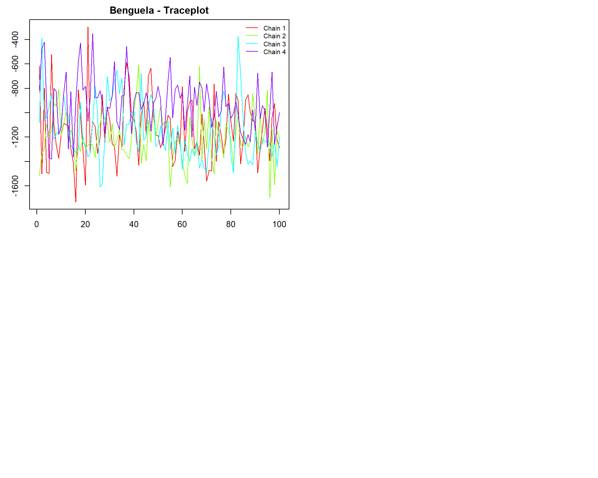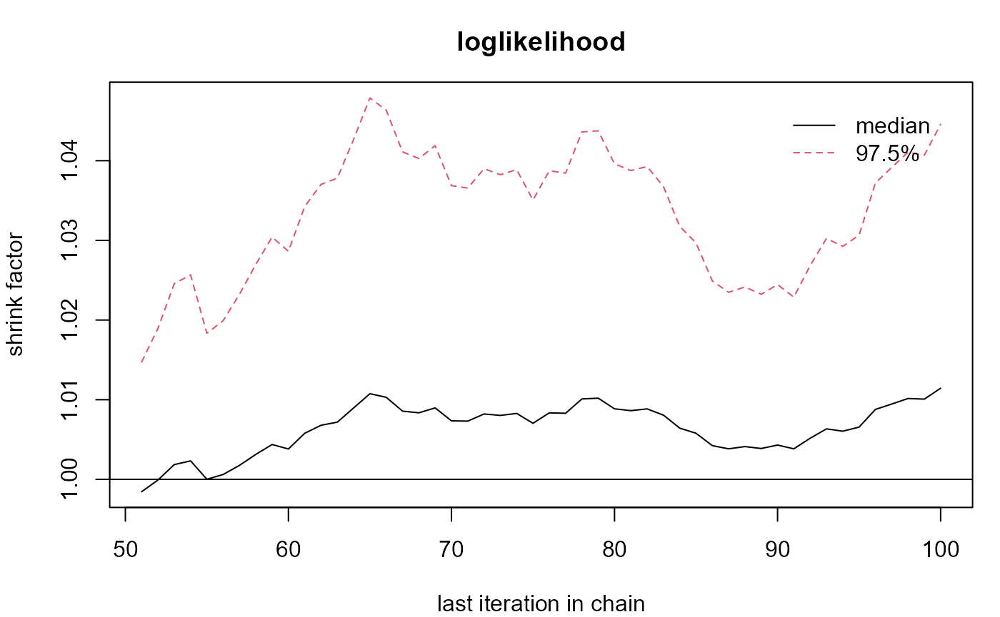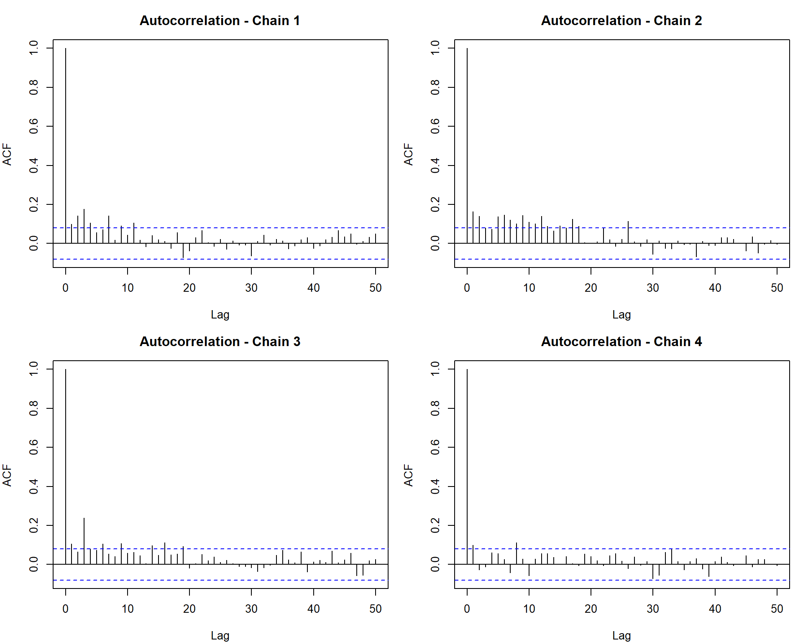
Identifying lack of convergence
When diagnosing MCMC output, the following visual patterns indicate that chains may not have converged:
values: In the Gelman–Rubin plot, values should stabilize close to 1.0. If the curve stays well above 1.1 or drifts without settling, it signals non-convergence.
Chain mixing: In well-mixed traceplots, chains appear as overlapping “caterpillars” that fluctuate around a common mean. If the traces show different levels, do not overlap, or drift apart, it suggests poor mixing.
Autocorrelation: A good autocorrelation plot shows a rapid decline toward zero within a few lags. If autocorrelation remains high or decays slowly across iterations, it means the chains are exploring the parameter space inefficiently and convergence has not been reached.
How to improve convergence.
If chains fail to converge, several adjustments can help improve stability and mixing:
Increase the number of iterations: Allow more sampling time so chains have a better chance to explore the parameter space thoroughly.
Run additional chains in parallel: More chains improve the chances of detecting convergence and can reveal mixing issues more clearly.
Adjust the chunk size or apply thinning: Modifying these settings can reduce autocorrelation and improve the efficiency of the samples.
The package also includes an automatic convergence check: sampling will stop early once the criteria above are satisfied, so in many cases you will not need to tune these settings manually.
10. Package structure and specifications
The MalReBay package is organized around three main
stages: data preparation, Bayesian inference with MCMC, and
summarization of results.
10.1 Data preparation
import_data()function reads the input Excel file, automatically detects the data type (length-polymorphic vs. amplicon sequencing), and applies basic cleaning.For length-polymorphic markers,
define_alleles()groups raw fragment lengths into discrete, well-defined allele bins.calculate_frequencies()function estimates the initial population-level frequency of each allele, which serves as the prior for the MCMC algorithm.recode_alleles()converts allele values into integer-based codes, ensuring consistency across sites and markers.
Output: A clean, structured dataset ready to be passed into the Bayesian engine.
10.2 Bayesian inference with MCMC
At the core of the package is a Gibbs sampling engine that explores the probability space and classifies recurrent infections as reinfections or recrudescences.
run_all_sites()organizes the analysis across geographical sites, calling the relevant MCMC functions (run_one_chain()orrun_one_chain_ampseq()).-
During each iteration, the algorithm updates key parameters:
Hidden alleles (
switch_hidden_length()/switch_hidden_ampseq()).Population allele frequencies (
findposteriorfrequencies())
Multiple chains run in parallel, with automatic convergence checks based on R-hat and ESS.
10.3 Summarization and output
Once the MCMC converges, the package distills the results into clear, interpretable outputs.
Posterior Probabilities: A summary table reporting, for each patient, the posterior probability of recrudescence.
Diagnostic Reports: Functions such as
generate_likelihood_diagnostics()produce trace plots and Gelman–Rubin plots for convergence checks.Allele Frequency Plots:
generate_allele_frequency_plot()visualizes allele distributions overall and by site.Marker-Level Analysis: Detailed tables show how individual genetic markers contribute to each classification